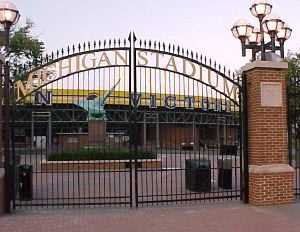

Related Sites Pro- New Design Anti- New Design Letter to the University Record Proposed New Fight Song
Hail to the corrugation
Hail to the monster TVs
|
|
The Big HouseIn summer of 1998, the University of Michigan added 5,000 seats and two large-screen televisions to its football stadium. To finish the exterior of the added seating area, a yellow corrugated steel "halo" and blue block lettering were implemented.
News Flash: September 6, 1999 -

|